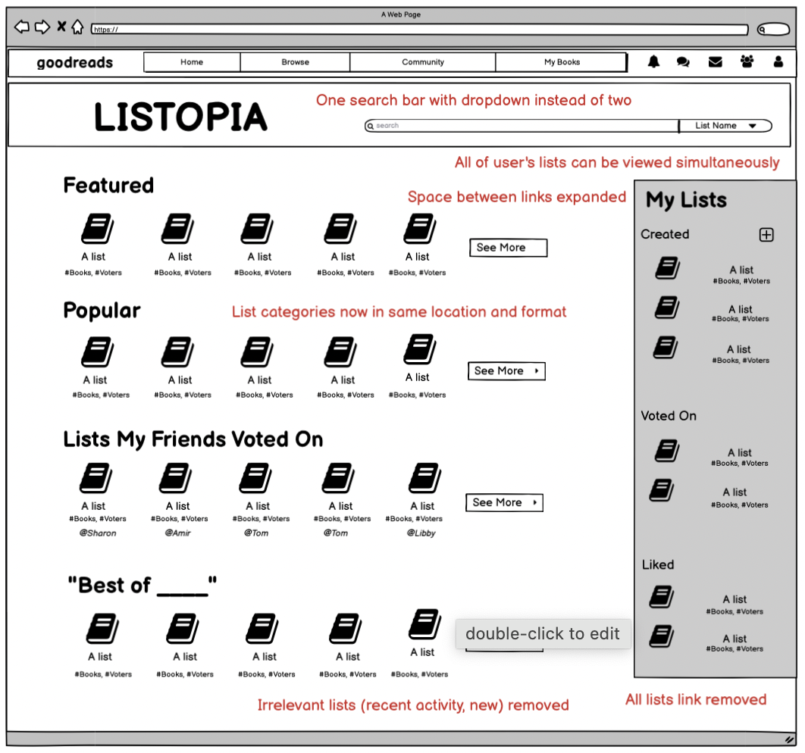
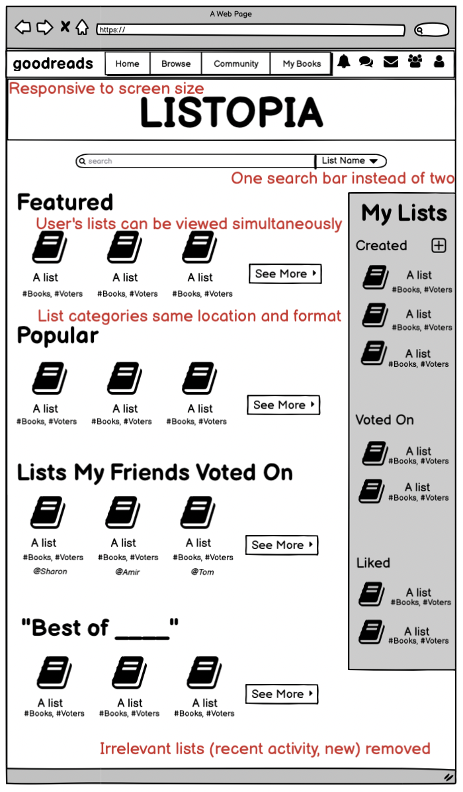
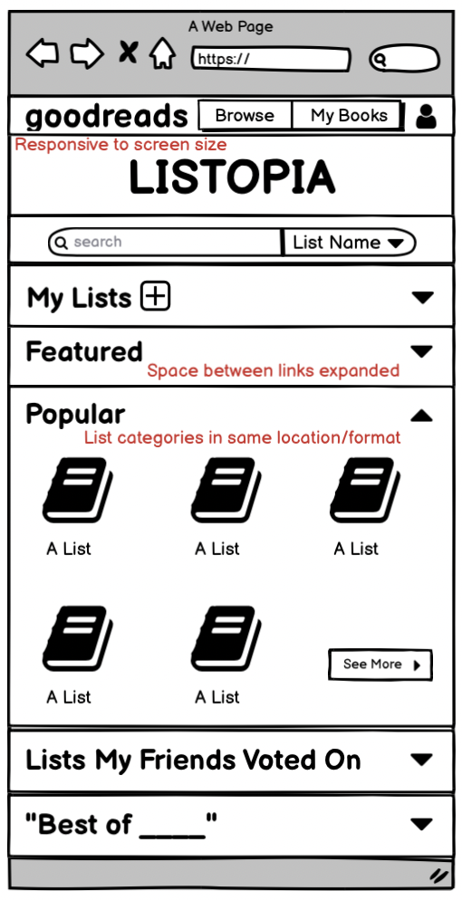
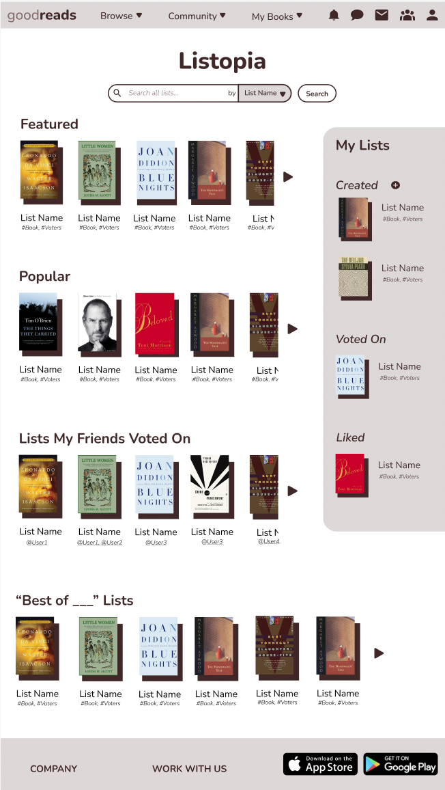
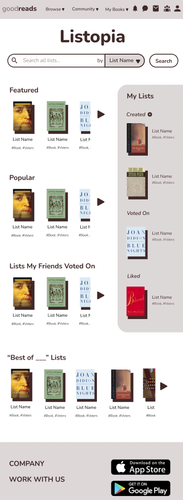
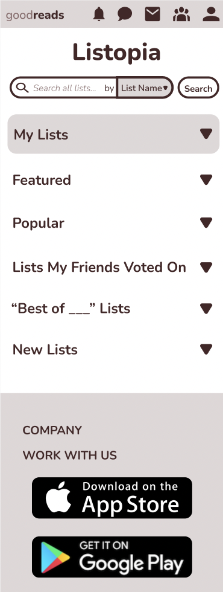

Part 1: Assessing Issues
Usability Issues
Learnability
- Why the list categories aren't all in the same location and format (compare featured/recent activity in center with best of/brand new on right)
- Why there are two search bars (one for general and one for tags)
- Why they can't browse all of their lists at the same time
New users may be confused about:
Memorability
- Where different book list categories are
- Where and how to search their lists
- How to browse
Casual users may forget:
Efficiency
- "All Lists" link that leads to main Listopia page (e.g. goes nowhere)
- Irrelevant lists with little traction in recent activity and brand new list categories
- The inefficient browsing process
Frequent users might be slowed down by:
Accessibility Issues
Low Contrast
- WebAIM WAVE reveals that the page has 60 instances of low contrast (number of books and voters written in very light text on white background), which makes some text unreadable for those who are visually impaired
Small Text and Spaces
- Small text makes the page difficult to read for those who are visually impaired
- Small spaces between links (e.g. lists I've created/voted on/liked) makes selecting options difficult for those with impairments relating to fine motor skills
Single Screen Size
- Page is not adaptable to different screen sizes, so is inaccessible to those viewing on non-desktop devices or tab sizes
Part 2: Low-Fidelity Wireframing
Desktop View
Tablet View
Phone View
Part 3: Visual Redesigning
Visual Design Style Guide
On the right, is my visual design style guide. I attempted to retain as much of the original design as possible, while introducing new elements and interactions that would make the page more usable and accessible. For example, I replaced the two search bars in the original design with a search bar that has a dropdown attached, and I changed the number of books and voters text to be more readable and accessible for those with visual impairments.
Part 4: High-Fidelity Prototyping
Desktop View
Tablet View
Phone View
Part 5: Solution
Redesigned Listopia Page
Below, I compare the current Listopia page (left) with my redesigned page (right). Feel free to navigate to the links to explore the differences for yourself!